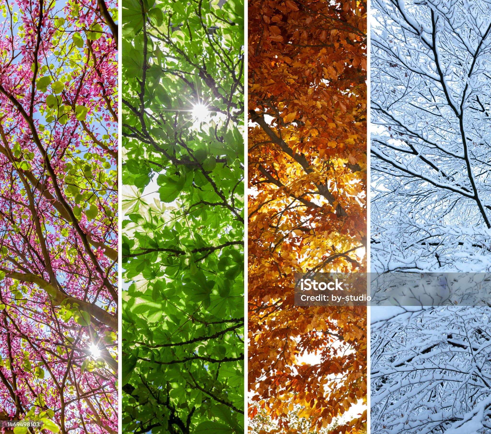

<!DOCTYPE html>
<html lang="en-US"></html>
<header1>
<meta name="viewport" content="width=device-width, initial-scale=1.0"/>
<meta charset="utf-8" />
<title> Vivaldi. A digital homage: </title>
<h1>Welcome!</h1>
<link href="Vivaldi.CSS" rel ="stylesheet"/>
<script async src="Project-2025---WIP-Team/Vivaldi.js"></script>
//nu știu să bag favicon, aia e//
<link rel="icon" href="favicon.svg"/>
<link rel="manifest" href="/manifest.json">
<meta name="msapplication-TileColor" content="#da532c">
<meta name="theme-color" content="#ffffff">
//aici se încheie . atât s-a putut pe favicon//
</header>
<body>
  <h2>This is a <b>beginner's</b> project. Our <q>Work-in-Progress</q> Team <s>hardly</s> worked for this.</h2>
        <summary><h3>A list of our thoughts in the oven:</h3></summary>
        <ul>
            <li>It was tough but we managed to do a basic thing.</li>
            <li> <a href = "https://www.youtube.com/watch?v=pct1uEhAqBQ&list=RDpct1uEhAqBQ&start_radio=1" target="_blank"> Here we have a link reflective of our attempts. </a></li>
            <li> Enjoy.</li>
         </ul>       
    <div class="container">
    <fieldset>
    <legend><h1 id="main-title">Which one is your favorite?</h1></legend>
    <div class="buttons" id="season-buttons">
      <button onclick="document.location='file:///D:/WORK/FRONTEND/PROJECT WIP/Project-2025---WIP-Team/Autumn.HTML'">Autumn</button>
      <button onclick="document.location='file:///D:/WORK/FRONTEND/PROJECT WIP/Project-2025---WIP-Team/winter.HTML'">Winter</button>
      <button onclick="document.location='file:///D:/WORK/FRONTEND/PROJECT WIP/Project-2025---WIP-Team/Spring.HTML'">Spring</button>
      <button onclick="document.location='file:///D:/WORK/FRONTEND/PROJECT WIP/Project-2025---WIP-Team/summer.HTML'">Summer</button>
    </div>
     <div id="season-content" class="hidden">
      <p id="season-description"></p>
      </audio>
      </fieldset>
      <br><br>
    </div>
  </div>
        
 
<br>
<br>
   
   <br>
   <br>
   
<br>
<br>
<br>
<br>
   <p>Thank you for your <strong>at-tension.</strong></p>
</body>

<br>
<br>
<footer>
    <i>We coded, therefore we were part of this cute experience.</i>
    <P>For more bakings, see <cite> Work-in-Progress Team - copyrights <time datetime="2025-06-12">
published on 12-06-2025</time>.</cite></P>
</footer>
</html>